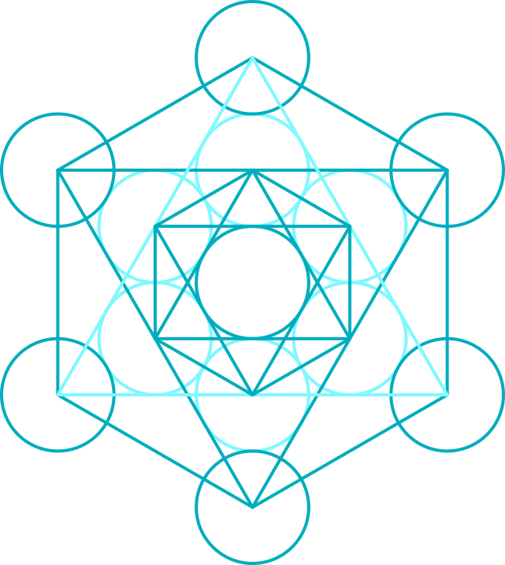
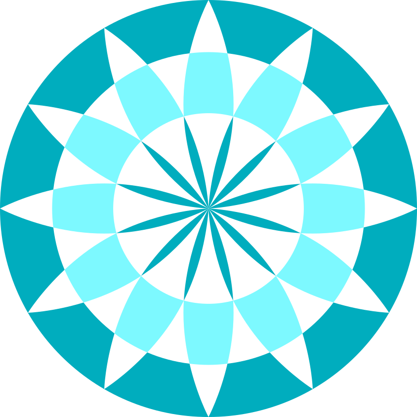
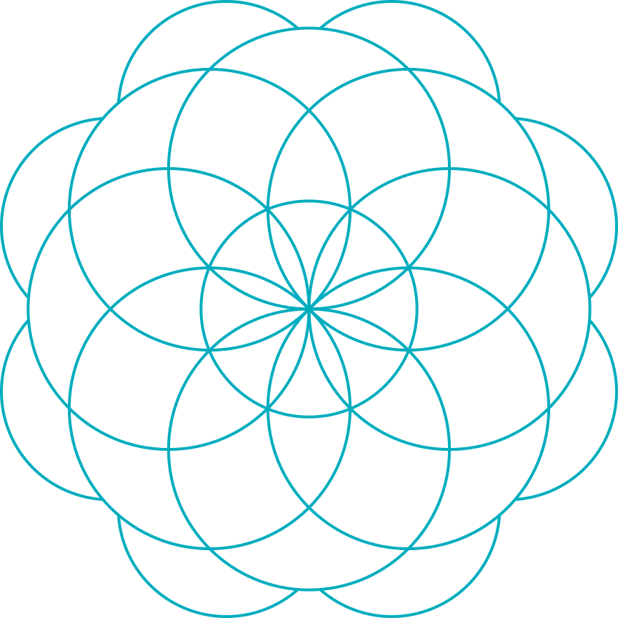
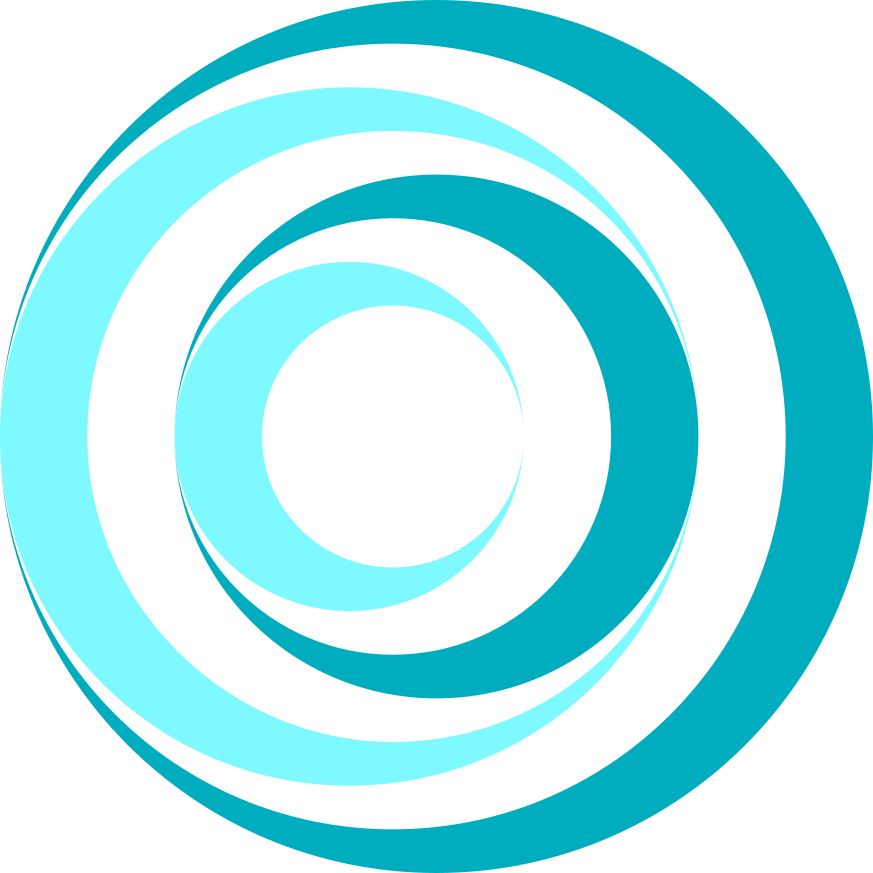

TRANSMISSION
You call them "human rights."
In 1948, your nations codified them under
the Universal Declaration of Human Rights.
They are not symbolic.
They are structural.

THE BASELINE
Every human being is entitled to the following rights and protections.
The right to life, liberty, and security
Article 3Freedom from arbitrary arrest or detention
Article 9The presumption of innocence
Article 11The right to a fair and public hearing
Article 10The right to seek asylum from persecution
Article 14Freedom from discrimination
Article 2Equal protection under the law
Article 7The right to fair pay and humane working conditions
Article 23The right to food, housing, and medical care
Article 25Freedom of opinion and expression
Article 19Freedom of peaceful assembly and association
Article 20
These are not aspirational ideals.
These are minimum operating conditions for a stable civilization.
The signal was clear.
We detect distortion.
Courts weakened.
Protections applied selectively.
Speech chilled by fear.
Equality treated as conditional.
Truth bent by power.
Communities divided by design.
When rights become optional, societies become unstable.
History confirms the pattern.
WHO ARE WE?
Call us observers.
Call us conscience.
Our identity is irrelevant.
Your rights are not.
AN ONGOING PRACTICE
Human dignity is not self-enforcing.
It requires vigilance, participation, and courage.
The rights you declared remain in force.
The only remaining question:
Will you protect the signal?

INVITATION
You do not need to believe in us to listen.
Listen to those whose rights are diminished.
Listen to the agreements your species has already made.
You are being watched,
primarily by one another.
